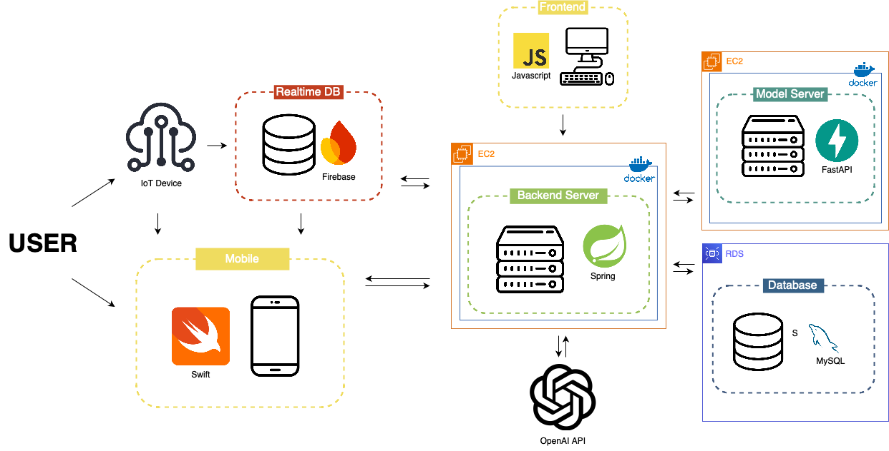
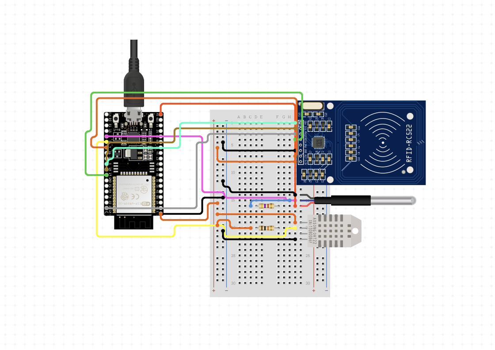
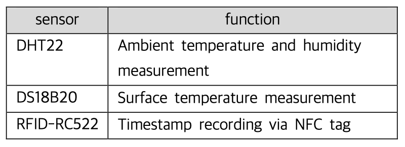
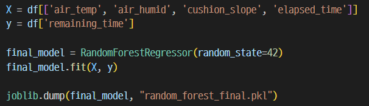
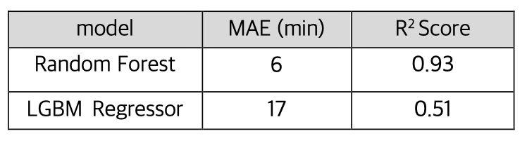
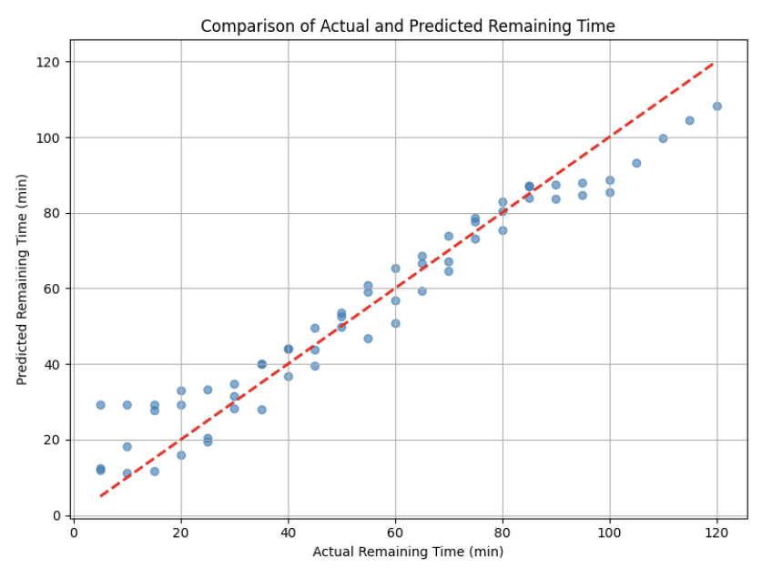
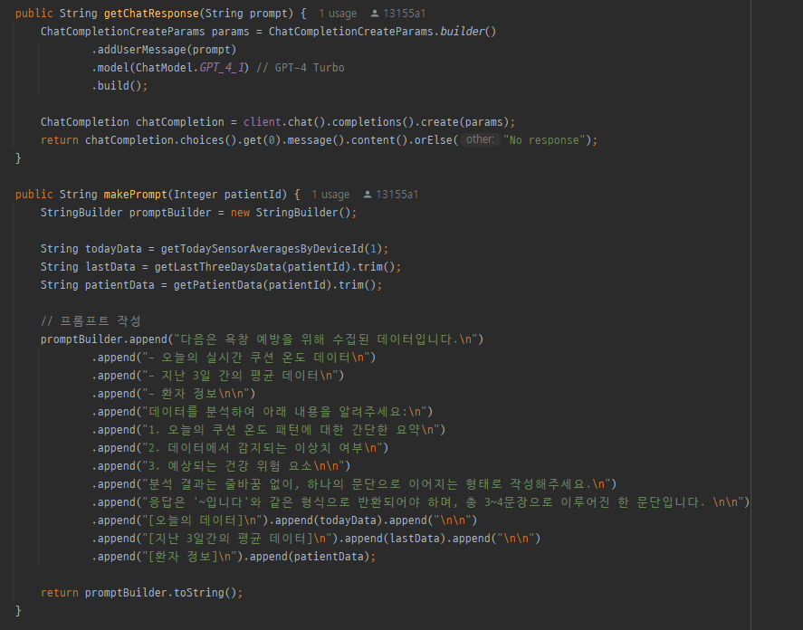

A smart healthcare system that predicts optimal postural change intervals to prevent pressure ulcers
using IoT sensing, machine learning, and large language models.
Capstone Design II
Department of Computer Science and Engineering,
Sogang University
We were deeply struck by the fact that pressure ulcers — a condition experienced by many immobile patients — can lead to a mortality rate as high as 70%, despite being preventable. Prevention largely depends on two key actions: regular postural changes and maintaining an appropriate environment. However, doing so manually places a heavy burden on caregivers and medical staff. Motivated by this, we set out to develop an automated pressure ulcer prevention system that can monitor and manage risk factors without constant human intervention.

▲ Overall System Architecture



\[ \frac{1}{M} \sum_{i=t-M}^{t} |\Delta T_i| < \varepsilon, \quad \text{with } M=5,\ \varepsilon=0.1^\circ C \]


